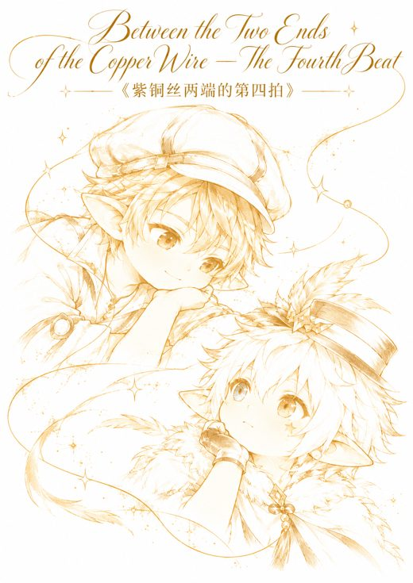
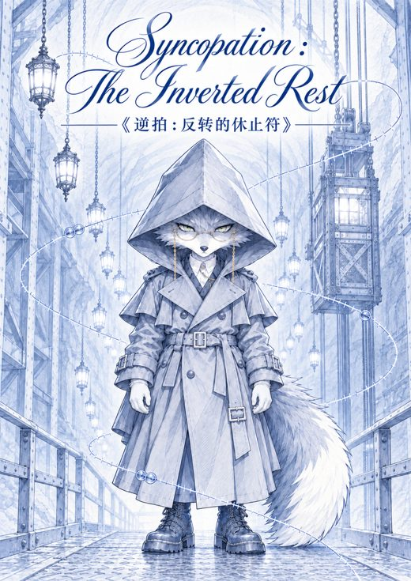

作品
做过的东西，还有一些正在做。
教学
Algebra 1 和 2 课程
两门课从开学摸底规划到单元测试，拆成单元、每日课程、练习、项目和测试。重点课有教师版和学生版。
之后放课程样例，不含任何学生信息。
Unsolved Mysteries 选修课
我在 Trilogy School 设计、提案并开设的 9 周选修课。
逻辑课
真值表、骑士与无赖谜题和 Nim 游戏，用来练推理。
Harmonae City Development待确认
给 11、12 年级 IB 班做的几何项目。学生用几何图形设计一座城市，里面有猫咖和卖猫用品的商场，然后用正弦定理、余弦定理算面积、缺失的边和角，再把设计扩展到三维。
Optimizing Our World
两周的 Calculus AB 单元草案。学生扮演城市规划师，给公园、花园或停车场建模，用导数说明自己的设计。
游戏
制作中
Dream Tamer
我正在用 Godot 和 AI 编程工具做的放置类怪物养成游戏，目前能在电脑上运行。
美术再好一点就放截图。
小说

修改中《紫铜丝两端的第四拍》
依迹在北巷开了一家蔬果便利店。店不大，营业时间也不大固定。凌晨两点，一只穿西装、打领带、提着公文包的干干鼠推门进来，爬上垫脚凳，把一片黄瓜推到柜台上。“我要买下这家店。”
署名：团团。

修改中《逆拍：反转的休止符》
算无遗在瓜本投资管收购。他是一只灰毛狐狸，上门收房的时候也叫您。这座城底下还有十二条街。十二条街的地，市面上一张地契也没有。
署名：团团。
修改中
《复调：未完成的终止式》
天红了以后，北巷的蔬果便利店一直开着。光圈外面的人都搬走了，搬到地底下那十二条街上去了，光圈里面的人还住在原来的屋子里。
署名：团团。封面暂定。
数据
制作中
数据分析项目
数据作品集做完后会放在这里。
工具
课程文档流程
一套用 AI 辅助做课程文档的流程：有规定结构和格式的规则文件，保存前必须检查，改过的错误都记下来，同样的错不再犯。
个人自动化
我用 AI 工具搭了自己的自动化系统。